看不见的世界，
怎样被看见？
真正让我停下来思考的，并非装置的体量，而是它所指向的、肉眼无法抵达的世界。
物质内部的结构、运动与变化，常常沉默在表象之下。中国散裂中子源为研究者提供中子散射实验条件，让他们从测量所得的数据中寻找线索，研究材料、能源与生命科学等领域的问题。在这里，“看见”不再只是凝视，更是测量、求证与不断修正。
我想到的还有另一层问题：如此深入的探索，为什么离不开大型共享设施、不同团队的协作和长久的投入？有些未知，单凭一间实验室难以照亮；许多人把知识、时间与资源汇聚起来，世界的边界才可能被一点点推开。
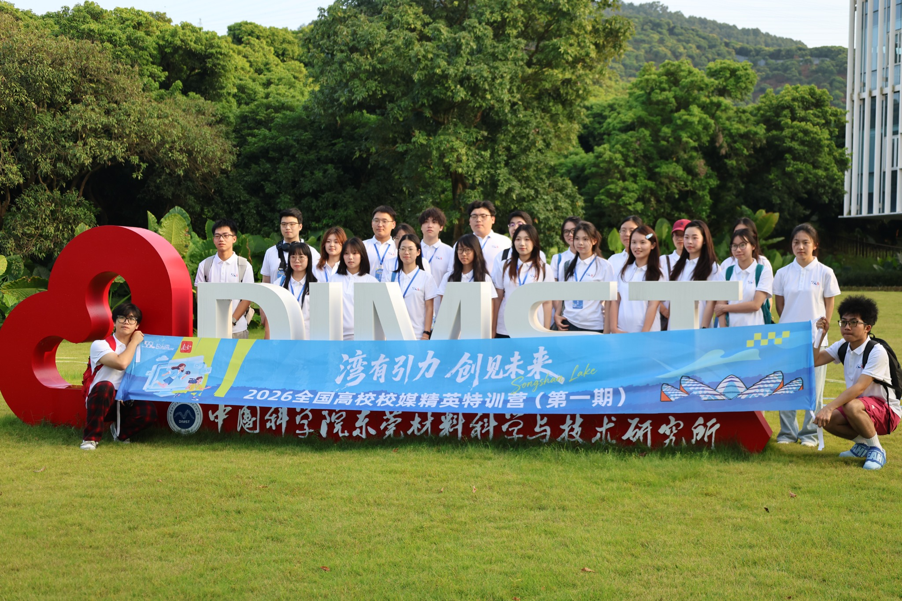
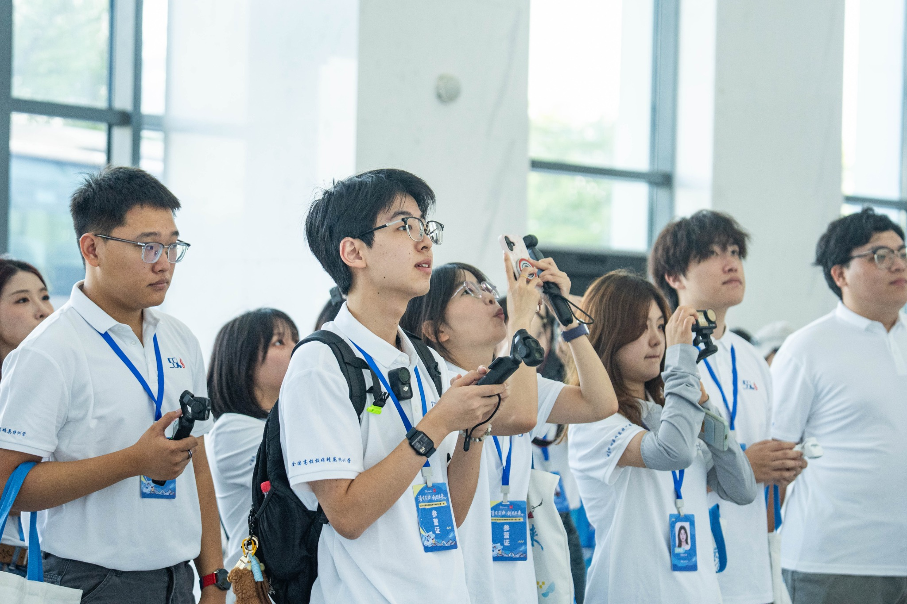
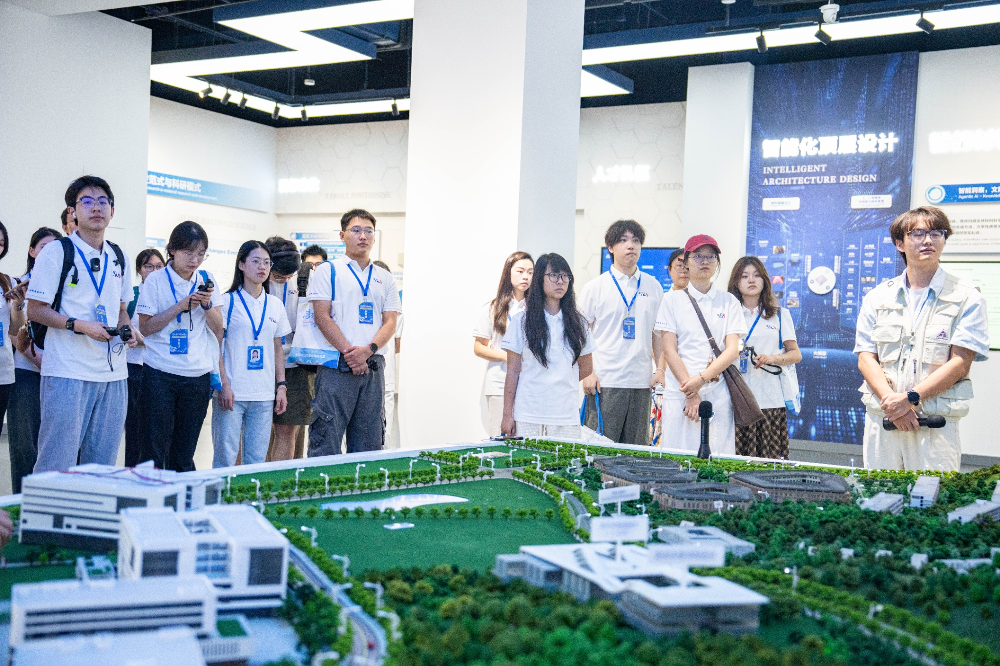
站在门前，
也站在问题的起点。
第一张 · 研究所门前的一张合影，为这次参访留下坐标。
从一种材料，
看见更多可能。
走进材料研究现场，抽象的科学忽然有了质地：展柜里的样品、屏幕上的结构图，都在提醒我，一项成果从来不只是一串漂亮的数据。
那天下午，我们走过展厅与实验室，听到关于非晶材料以及 AI 辅助材料研究的介绍。一边是面对真实材料的观察、实验和检验，一边是试着从复杂信息中寻找规律、辅助判断。方法各异，却都要求研究者对结果保持谨慎。
一个现象能在实验中发生，尚不意味着它可以在生活中经得起考验。能否重复、能否制造、成本是否可控、究竟替谁解决问题——从发现到应用之间，横亘着一道道朴素而严格的关口。
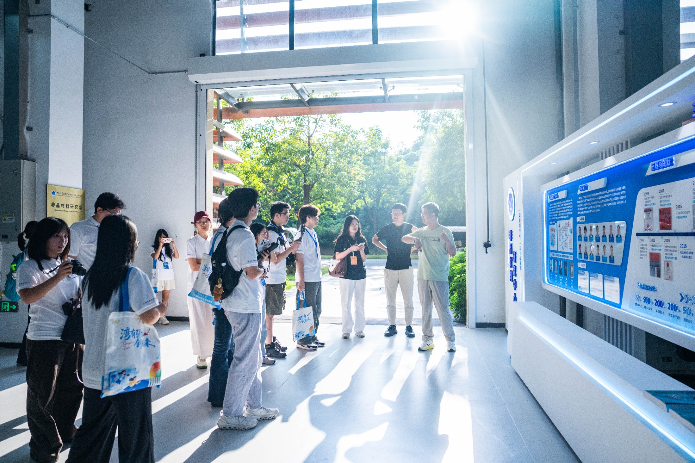
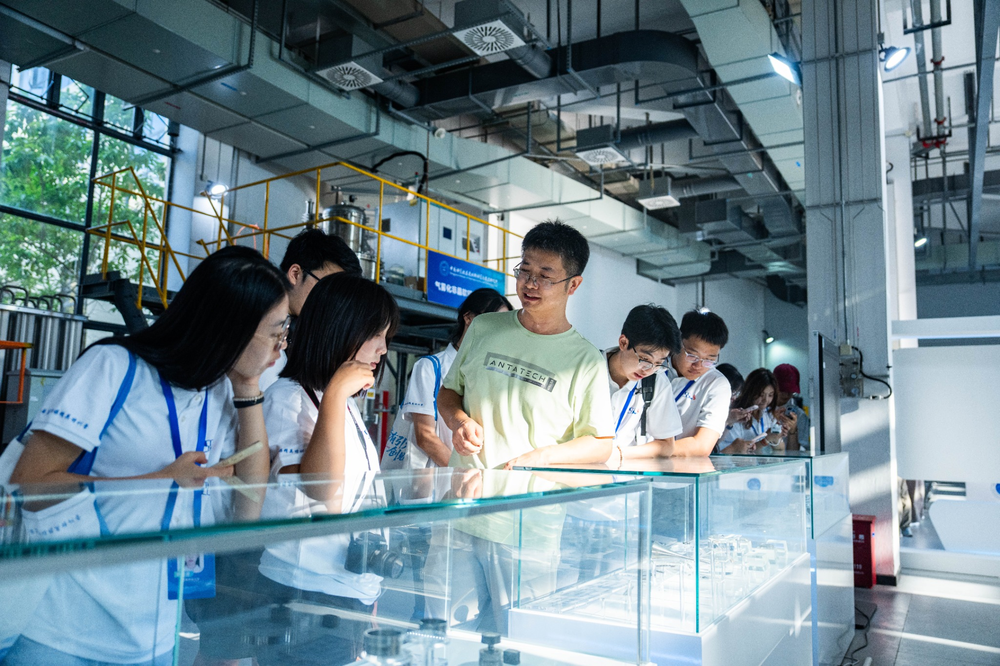
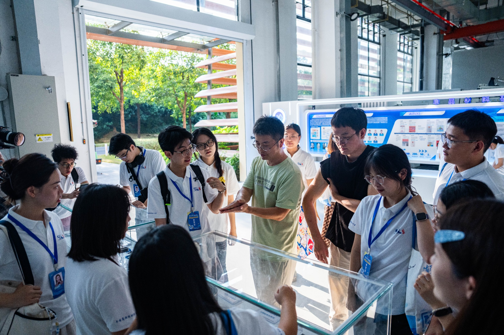
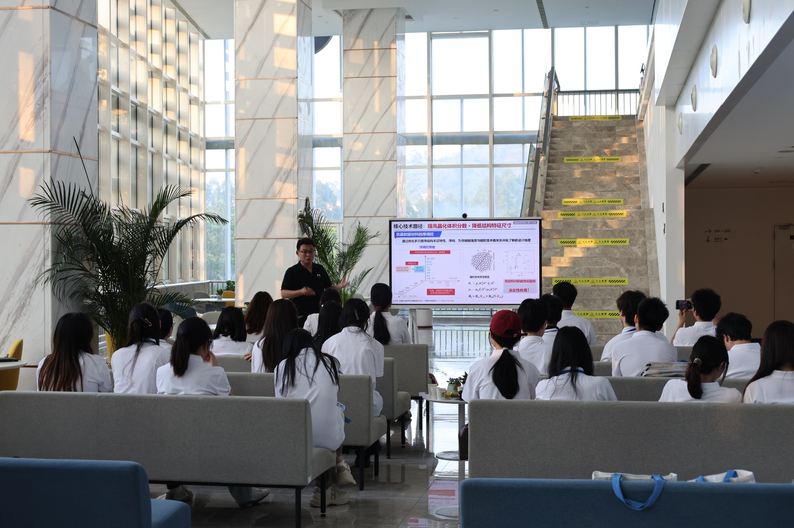
从一件展品，
追问材料的另一面。
第一张 · 非晶材料展区里，讲解与提问从一件件展品展开。
让技术，
开始行动。
站在机器人展示区前，惊叹几乎是本能；可离开现场，我更想知道：它究竟会在哪个人的生活里，真正派上用场？
两天里，从广东省智能机器人研究院到 XbotPark，再到松灵机器人，我先后接触研究、创业培育与产品应用的不同侧面。它们并非一条现成的产业链，却共同提醒我：技术一旦离开实验室，面对的就不再只是技术问题。
一台机器即使能在演示中流畅地完成动作，也还要在真实环境中回答更多追问：谁愿意使用？能否长久稳定地工作？出了故障怎么办？成本与维护由谁承担？展示让人看见可能，日复一日的使用，才真正检验价值。
离开现场后，
还想问的三件事。
01机器人如何走出展示台，找到第一个愿意使用它的人？＋
想继续问：最初设想的场景与真实需求有何落差？第一批用户的反馈，曾让团队改动过什么？
02从一次成功演示，到千百次可靠运行，要跨过什么？＋
想继续问：可靠性、供应链、成本和后续维护，哪一道关口最难？能否分享一次具体的挫折与调整？
03选择扎根松山湖，团队最需要怎样的支持？＋
想继续问：人才、资金、试验场景和上下游协作，哪些支持真正帮团队走过难关？
在 XbotPark，
留下一段现场。
镜头里是学员在展厅中的交流与互动；这是一段参访记录，并非机器人运行演示。
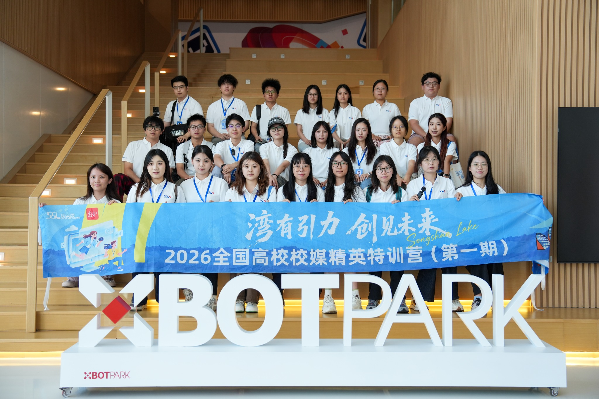
把这一天，
留在同一张合影里。
10月23日，走访 XbotPark 机器人基地后，同行的校媒学员在阶梯前留下合影。研究与创业的故事仍在向前，而这一刻，属于亲自来到现场的我们。
现场实拍 · 2026.10.23当科技不再遥远，
而是关乎每一天。
前一天我还在运动健康实验室里思考数据与设备，第二天便坐上松山湖的皮划艇。原来“应用”二字，一头连着精密研究，一头连着最寻常的身体感受。
在华为运动健康科学实验室，运动不再只是一个动作，也可以被观察、测量与记录。听着现场讲解，我开始留心那些看似细小的问题：数据怎样被采集和理解？研究怎样进入产品设计？一项功能能否让普通人在日复一日的使用中感到安心与便利？
我渐渐明白，科技与生活之间的距离，并不靠宏大的概念来缩短。好的应用既需要精密的能力，也需要体察日常的耐心；它最终面对的，不是展台，而是一个个具体的人。
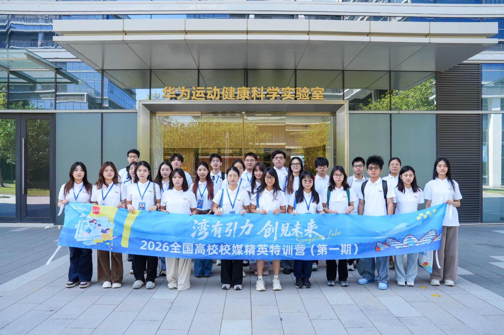
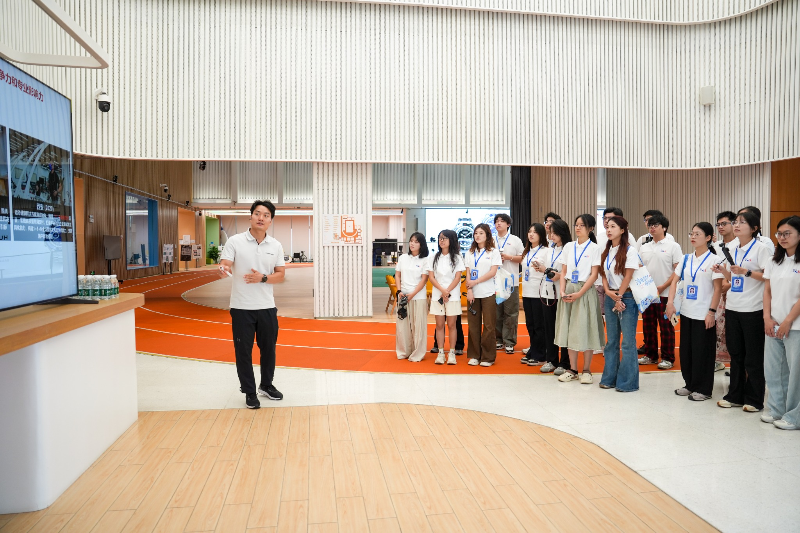
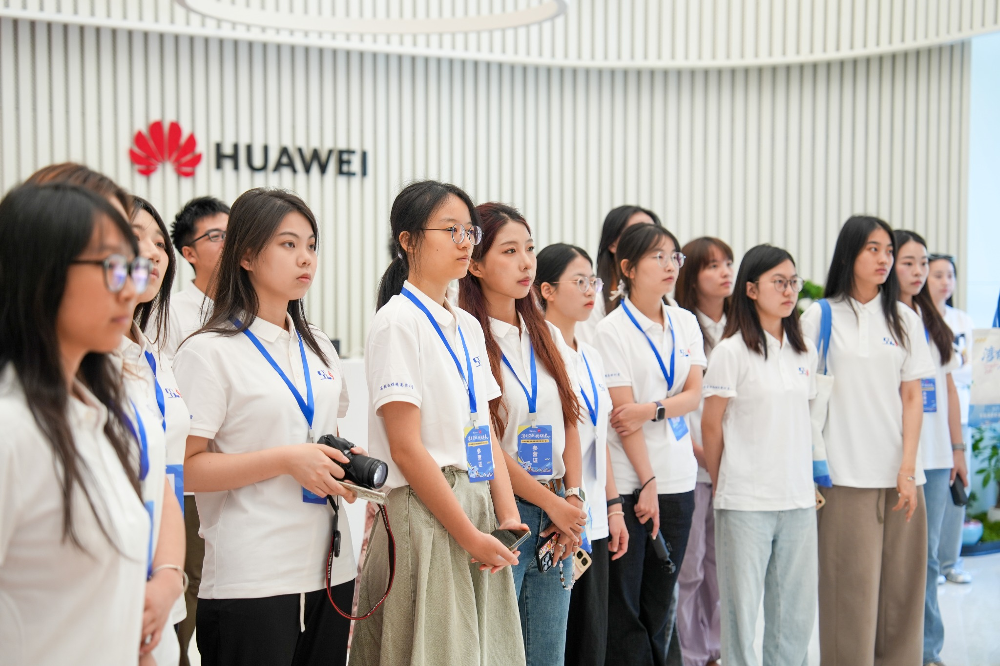
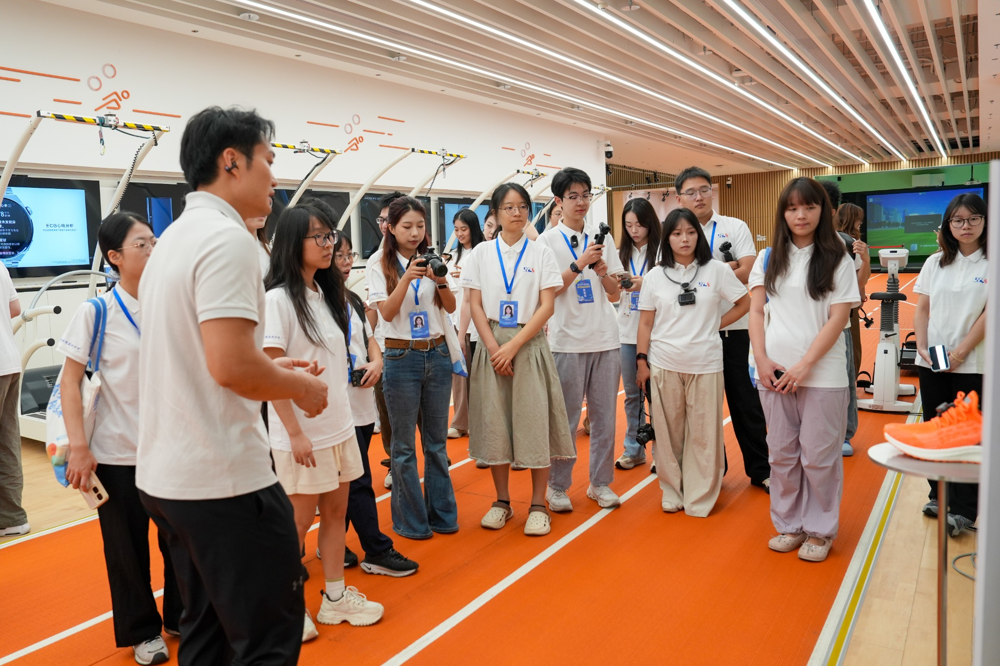
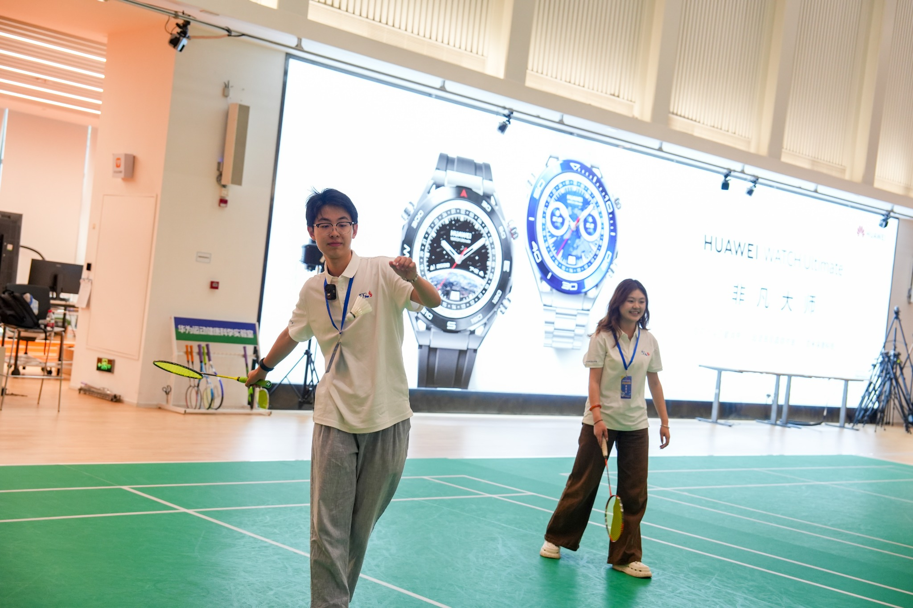
从一扇门出发，
走近运动的另一面。
第一张 · 实验室入口的一张合影，是这天参访的开场。
松山湖 · 悠兰里
离开展厅，
划进湖光里。
10月24日下午，在悠兰里穿上救生衣，和同伴坐进皮划艇。船身随着水波轻轻晃动，桨叶划过湖面，原本在实验室里反复思考的“运动体验”，忽然有了极具体的模样：掌握平衡，也学着与身边的人配合节奏。
夕阳慢慢落向湖岸，水面铺开细碎的金光。前一天，我试着理解科学如何认识身体；这一天，我把注意力还给了身体本身。科技能帮助我们记录运动的轨迹，而亲身经历的快乐，终究要由自己完成。
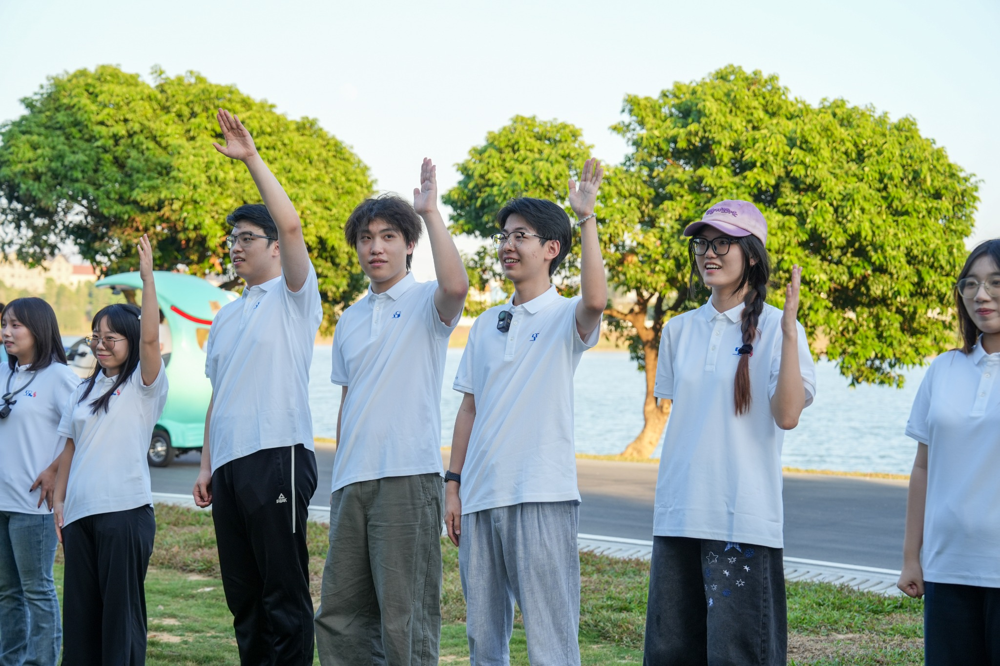
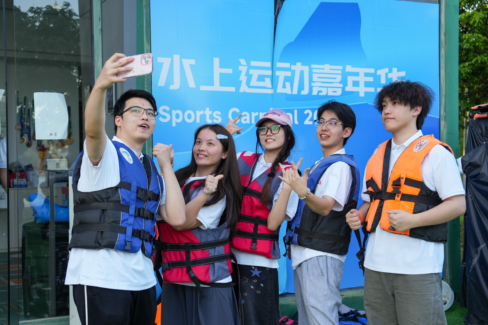
挥挥手，
向湖面出发。
第一张 · 湖边举起的手，留住了出发前轻松的一刻。
最终推动技术向前的，
仍然是人。
在大湾区大学的活动现场，我看见另一种不同于实验室的忙碌：有人讲述研究，有人倾听、记录，也有人试着判断一个想法的下一程。
开幕式与博士博士后创新创业大赛相关活动，让抽象的“人才发展”有了具体的面孔与声音。站上路演台的研究者，不只要讲明白技术本身，还需解释它回应了什么现实需求，为什么值得继续投入。创新离不开专业知识，也离不开与世界沟通的能力。
我学金融工程，因而格外在意技术之外的另一种时间：一项尚未成熟的研究，怎样获得继续试错的资金、耐心与机会？吸引人才是一时的选择；让他们有条件把事情做成，才是一座城市更长久的承诺。
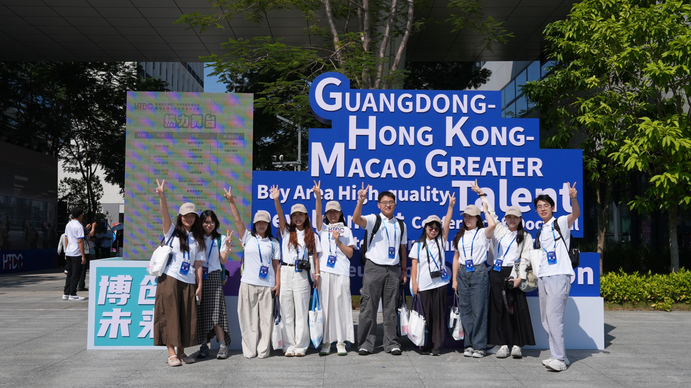
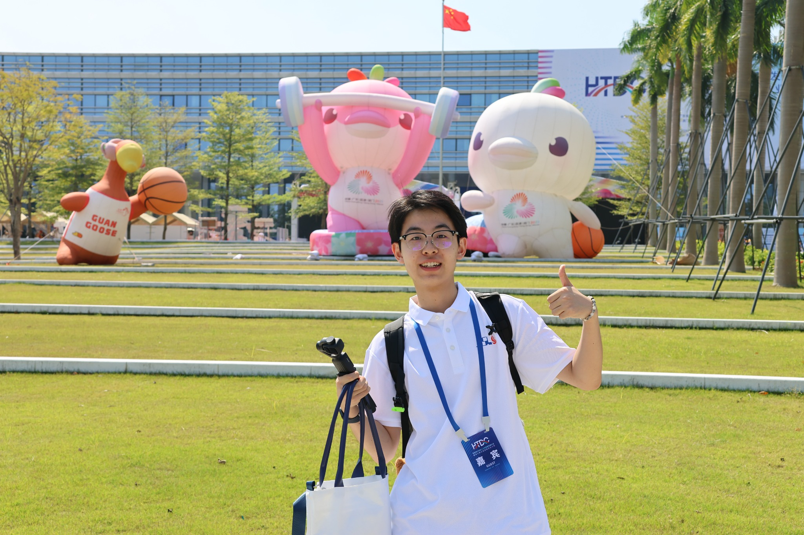
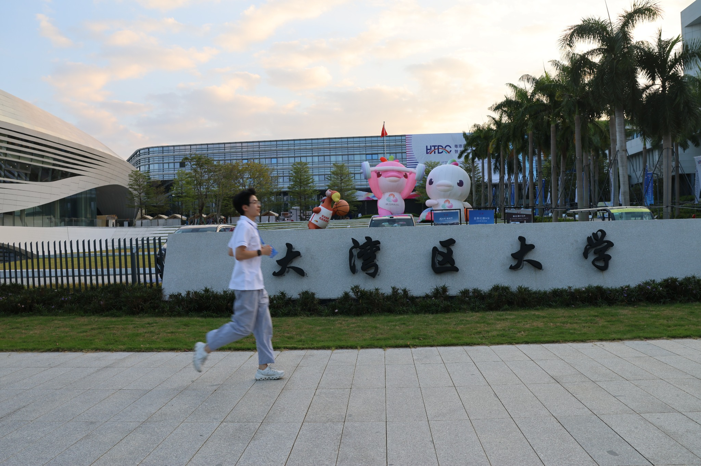
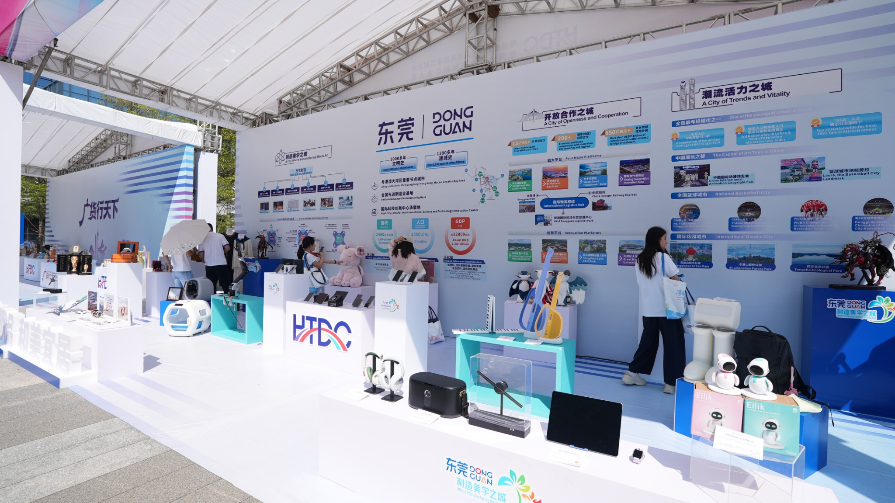
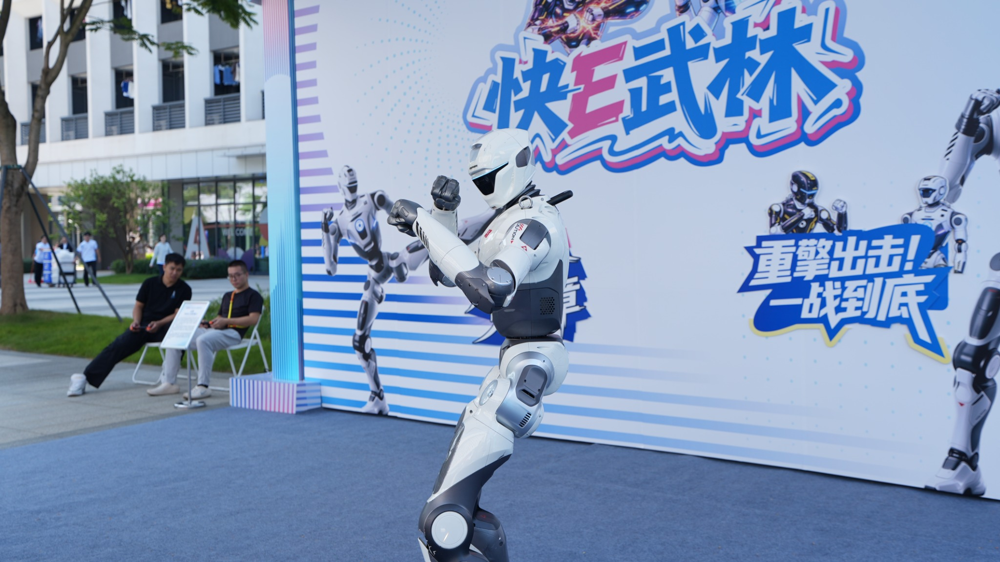
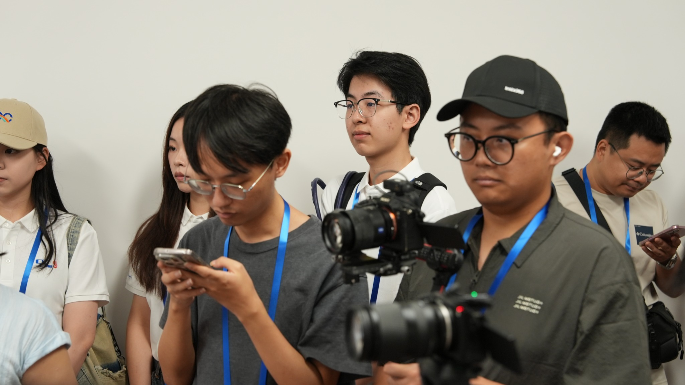
人群汇聚之处，
故事有了新的主角。
第一张 · 大湾区人才活动标识前，校媒学员留下合影。